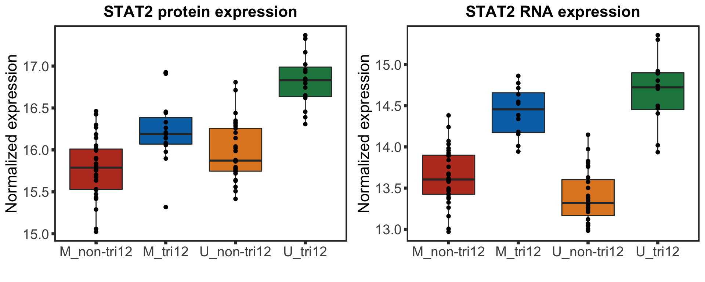
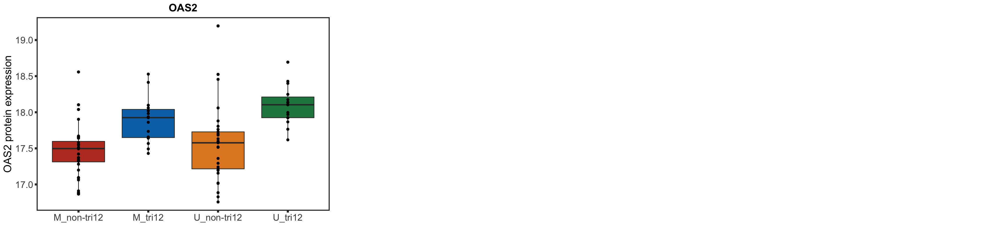
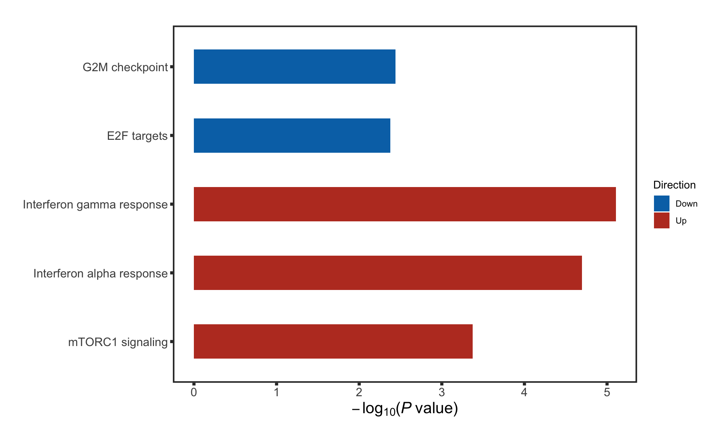
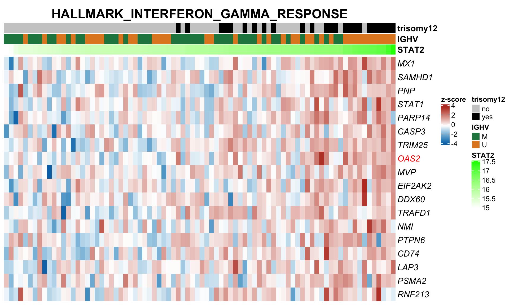

Section 9: Explaining STAT2 protein expression using multi-omic data
Junyan Lu
2020-10-09
Last updated: 2021-05-06
Checks: 5 2
Knit directory: CLLproteomics_publish_revision/analysis/
This reproducible R Markdown analysis was created with workflowr (version 1.6.2). The Checks tab describes the reproducibility checks that were applied when the results were created. The Past versions tab lists the development history.
The R Markdown is untracked by Git. To know which version of the R Markdown file created these results, you’ll want to first commit it to the Git repo. If you’re still working on the analysis, you can ignore this warning. When you’re finished, you can run wflow_publish to commit the R Markdown file and build the HTML.
Great job! The global environment was empty. Objects defined in the global environment can affect the analysis in your R Markdown file in unknown ways. For reproduciblity it’s best to always run the code in an empty environment.
The command set.seed(20200227) was run prior to running the code in the R Markdown file. Setting a seed ensures that any results that rely on randomness, e.g. subsampling or permutations, are reproducible.
Great job! Recording the operating system, R version, and package versions is critical for reproducibility.
- unnamed-chunk-12
- unnamed-chunk-19
- unnamed-chunk-26
- unnamed-chunk-4
- unnamed-chunk-5
To ensure reproducibility of the results, delete the cache directory manuscript_S9_STAT2_cache and re-run the analysis. To have workflowr automatically delete the cache directory prior to building the file, set delete_cache = TRUE when running wflow_build() or wflow_publish().
Great job! Using relative paths to the files within your workflowr project makes it easier to run your code on other machines.
Great! You are using Git for version control. Tracking code development and connecting the code version to the results is critical for reproducibility.
The results in this page were generated with repository version 3fb50c5. See the Past versions tab to see a history of the changes made to the R Markdown and HTML files.
Note that you need to be careful to ensure that all relevant files for the analysis have been committed to Git prior to generating the results (you can use wflow_publish or wflow_git_commit). workflowr only checks the R Markdown file, but you know if there are other scripts or data files that it depends on. Below is the status of the Git repository when the results were generated:
Ignored files:
Ignored: .DS_Store
Ignored: .Rhistory
Ignored: .Rproj.user/
Ignored: analysis/.DS_Store
Ignored: analysis/.Rhistory
Ignored: analysis/manuscript_S1_Overview_cache/
Ignored: analysis/manuscript_S2_genomicAssociation_cache/
Ignored: analysis/manuscript_S3_trisomy12_cache/
Ignored: analysis/manuscript_S4_IGHV_cache/
Ignored: analysis/manuscript_S5_trisomy19_cache/
Ignored: analysis/manuscript_S6_del11q_cache/
Ignored: analysis/manuscript_S8_drugResponse_Outcomes_cache/
Ignored: analysis/manuscript_S9_STAT2_cache/
Ignored: code/.DS_Store
Ignored: code/.Rhistory
Ignored: data/.DS_Store
Ignored: output/.DS_Store
Untracked files:
Untracked: analysis/.trisomy12_norm.pdf
Untracked: analysis/IGHV_box.pdf
Untracked: analysis/IGHV_enrich.pdf
Untracked: analysis/IGHV_volcano.pdf
Untracked: analysis/bufferComplexViolin.pdf
Untracked: analysis/buffer_Tri12vsTri19.pdf
Untracked: analysis/cohortComposition_all.pdf
Untracked: analysis/drugBar.pdf
Untracked: analysis/dubelisib_tri12.pdf
Untracked: analysis/heatmap_tri12_circle.pdf
Untracked: analysis/manuscript_S1_Overview.Rmd
Untracked: analysis/manuscript_S2_genomicAssociation.Rmd
Untracked: analysis/manuscript_S3_trisomy12.Rmd
Untracked: analysis/manuscript_S4_IGHV.Rmd
Untracked: analysis/manuscript_S5_trisomy19.Rmd
Untracked: analysis/manuscript_S6_del11q.Rmd
Untracked: analysis/manuscript_S7_SF3B1.Rmd
Untracked: analysis/manuscript_S8_drugResponse_Outcomes.Rmd
Untracked: analysis/manuscript_S9_STAT2.Rmd
Untracked: analysis/plot_PC1_PC2.pdf
Untracked: analysis/protDrugTP53.pdf
Untracked: analysis/timsTOF_validate.Rmd
Untracked: analysis/tri12_transEnrich.pdf
Untracked: analysis/tri19_dosage_effect.pdf
Untracked: analysis/tri19_sum_buffer_number.pdf
Untracked: analysis/trisomy12_chr_summary.pdf
Untracked: code/utils.R
Untracked: data/Annotation file March 2021.xlsx
Untracked: data/CAS9results.xlsx
Untracked: data/CNV_onChrom.RData
Untracked: data/ComplexParticipantsPubMedIdentifiers_human.txt
Untracked: data/Fig1A.png
Untracked: data/IGLV321_SupplementalTables_R2.xlsx
Untracked: data/MOFAout.RData
Untracked: data/MOFAout_atLeast3.RData
Untracked: data/STATexprPCR.xlsx
Untracked: data/Western_blot_results_20210309_short.csv
Untracked: data/Western_blot_results_separate_blots.xlsx
Untracked: data/allComplexes.txt
Untracked: data/ddsrna_enc.RData
Untracked: data/exprCNV_enc.RData
Untracked: data/geneAnno.RData
Untracked: data/gmts/
Untracked: data/ic50.RData
Untracked: data/mofaIn.RData
Untracked: data/mofaIn_atLeast3.RData
Untracked: data/patMeta_enc.RData
Untracked: data/pepCLL_lumos_enc.RData
Untracked: data/protMOFA.RData
Untracked: data/proteins_in_complexes
Untracked: data/proteomic_LUMOS_2pep_enc.RData
Untracked: data/proteomic_explore_enc.RData
Untracked: data/proteomic_independent_all_enc.RData
Untracked: data/proteomic_independent_enc.RData
Untracked: data/proteomic_timsTOF_enc.RData
Untracked: data/screenData_enc.RData
Untracked: data/setToPathway.txt
Untracked: data/survival_enc.RData
Untracked: output/MSH6_splicing.svg
Untracked: output/SUGP1_splicing.svg
Untracked: output/deResList.RData
Untracked: output/deResListBatch2.RData
Untracked: output/deResListRNA.RData
Untracked: output/deResListRNA_allGene.RData
Untracked: output/deResList_WBC.RData
Untracked: output/deResList_batch1.RData
Untracked: output/deResList_batch3.RData
Untracked: output/deResList_independent.RData
Untracked: output/deResList_timsTOF.RData
Untracked: output/dxdCLL.RData
Untracked: output/dxdCLL2.RData
Untracked: output/exprCNV.RData
Untracked: output/geneAnno.RData
Untracked: output/int_pairs.csv
Untracked: output/lassoResults_CPS.RData
Untracked: output/resOutcome_batch1.RData
Untracked: output/resOutcome_batch13.RData
Untracked: output/resOutcome_batch2.RData
Untracked: output/resOutcome_batch3.RData
Unstaged changes:
Modified: analysis/_site.yml
Deleted: analysis/analysisSF3B1.Rmd
Deleted: analysis/comparePlatforms.Rmd
Deleted: analysis/compareProteomicsRNAseq.Rmd
Deleted: analysis/correlateCLLPD.Rmd
Deleted: analysis/correlateGenomic.Rmd
Deleted: analysis/correlateGenomic_removePC.Rmd
Deleted: analysis/correlateMIR.Rmd
Deleted: analysis/correlateMethylationCluster.Rmd
Modified: analysis/index.Rmd
Deleted: analysis/predictOutcome.Rmd
Deleted: analysis/processProteomics_LUMOS.Rmd
Deleted: analysis/processProteomics_timsTOF.Rmd
Deleted: analysis/qualityControl_LUMOS.Rmd
Deleted: analysis/qualityControl_timsTOF.Rmd
Note that any generated files, e.g. HTML, png, CSS, etc., are not included in this status report because it is ok for generated content to have uncommitted changes.
There are no past versions. Publish this analysis with wflow_publish() to start tracking its development.
Load packages and datasets
library(cowplot)
library(piano)
library(pheatmap)
library(ComplexHeatmap)
library(jyluMisc)
library(limma)
library(gtable)
library(ggbeeswarm)
library(glmnet)
library(SummarizedExperiment)
library(tidyverse)
#load datasets
load("../data/patMeta_enc.RData")
load("../data/ddsrna_enc.RData")
load("../data/proteomic_explore_enc.RData")
load("../output/deResList.RData") #precalculated differential expression
load("../data/screenData_enc.RData")
# source
source("../code/utils.R")Feature selection with LASSO on multi-omic data to explain STAT2 protein expression
Preprocessing multi-omic data
Proteomics data
expVar <- "STAT2"
protMat <- assays(protCLL)[["QRILC_combat"]]
rownames(protMat) <- rowData(protCLL)$hgnc_symbol
yVec <- protMat[expVar,]
protMat <- protMat[rownames(protMat) != expVar,]
## Pre-filter for significant associations
designMat <- model.matrix(~yVec)
fit <- lmFit(protMat, design = designMat)
fit2 <- eBayes(fit)
resTab <- topTable(fit2, number = Inf)
keepProt <- filter(resTab, adj.P.Val < 0.05)$ID
protMat <- t(protMat[keepProt, ])
dim(protMat)[1] 91 474responseList <- list()
responseList[["STAT2"]] <- yVec
colnames(protMat) <- paste0(colnames(protMat),"_protein")RNAseq
#subset
ddsSub <- dds[,dds$PatID %in% colnames(protCLL)]
#only keep protein coding genes with symbol
ddsSub <- ddsSub[rowData(ddsSub)$biotype %in% "protein_coding" & rowData(ddsSub)$symbol %in% rowData(protCLL)$hgnc_symbol,]
#remove lowly expressed genes
ddsSub <- ddsSub[rowSums(counts(ddsSub, normalized = TRUE)) > 100,]
#voom transformation
ddsSub.vst <- varianceStabilizingTransformation(ddsSub)
exprMat <- assay(ddsSub.vst)
rnaMat <- exprMat
rownames(rnaMat) <- rowData(ddsSub.vst)$symbol
# Prefiltering
overSampe <- intersect(names(yVec), colnames(rnaMat))
designMat <- model.matrix(~ yVec[overSampe])
fit <- lmFit(rnaMat[,overSampe], design = designMat)
fit2 <- eBayes(fit)
resTab <- topTable(fit2, number = Inf) %>% data.frame() %>% rownames_to_column("ID")
keepRna <- filter(resTab, adj.P.Val < 0.05)$ID
rnaMat <- t(rnaMat[keepRna, ])
dim(rnaMat)[1] 82 156colnames(rnaMat) <- paste0(colnames(rnaMat),"_rna")Genomic data
ighvMap <- c(M = 1, U=0)
methMap <- c(LP= 0, IP=0.5, HP=1 )
#genetics
genData <- filter(patMeta, Patient.ID %in% colnames(protCLL)) %>%
dplyr::rename(IGHV = IGHV.status) %>%
mutate_at(vars(-Patient.ID), as.character) %>%
mutate(IGHV = ighvMap[IGHV]) %>%
mutate_at(vars(-Patient.ID), as.numeric) %>%
data.frame() %>% column_to_rownames("Patient.ID")
#remove gene with higher than 40% missing values
genData <- genData[,colSums(is.na(genData))/nrow(genData) <= 0.4]
#remove genes with less than 5 mutated cases
genData <- genData[,colSums(genData, na.rm = TRUE) >= 5]
#fill the missing value with majority
genData <- apply(genData, 2, function(x) {
xVec <- x
avgVal <- mean(x,na.rm= TRUE)
if (avgVal >= 0.5) {
xVec[is.na(xVec)] <- 1
} else xVec[is.na(xVec)] <- 0
xVec
})Drug responses
#choose the first sample
viabMat <- arrange(screenData, screenDate) %>%
filter(diagnosis == "CLL", patientID %in% colnames(protCLL)) %>%
distinct(patientID, Drug, concIndex, .keep_all = TRUE) %>%
filter(! Drug %in% c("DMSO","PBS")) %>%
mutate(id = paste0(Drug,"_",concIndex)) %>%
select(patientID, id, normVal.adj.sigm) %>%
spread(key = patientID, value = normVal.adj.sigm) %>%
data.frame() %>% column_to_rownames("id") %>%
as.matrix() %>% t()Feature selection with LASSO (L1) penalty
#Functions for running glm
runGlm <- function(X, y, method = "ridge", repeats=20, folds = 3, lambda = "lambda.1se") {
modelList <- list()
lambdaList <- c()
varExplain <- c()
coefMat <- matrix(NA, ncol(X), repeats)
rownames(coefMat) <- colnames(X)
if (method == "lasso"){
alpha = 1
} else if (method == "ridge") {
alpha = 0
}
for (i in seq(repeats)) {
if (ncol(X) > 2) {
res <- cv.glmnet(X,y, type.measure = "mse", family="gaussian",
nfolds = folds, alpha = alpha, standardize = FALSE)
lambdaList <- c(lambdaList, res[[lambda]])
modelList[[i]] <- res
coefModel <- coef(res, s = lambda)[-1] #remove intercept row
coefMat[,i] <- coefModel
#calculate variance explained
y.pred <- predict(res, s = lambda, newx = X)
varExp <- cor(as.vector(y),as.vector(y.pred))^2
varExplain[i] <- ifelse(is.na(varExp), 0, varExp)
} else {
fitlm<-lm(y~., data.frame(X))
varExp <- summary(fitlm)$r.squared
varExplain <- c(varExplain, varExp)
}
}
list(modelList = modelList, lambdaList = lambdaList, varExplain = varExplain, coefMat = coefMat)
}#function for scaling predictors
dataScale <- function(x, censor = NULL, robust = FALSE) {
#function to scale different variables
if (length(unique(na.omit(x))) <=3){
#a binary variable, change to -0.5 and 0.5 for 1 and 2
x - 0.5
} else {
if (robust) {
#continuous variable, centered by median and divied by 2*mad
mScore <- (x-median(x,na.rm=TRUE))/mad(x,na.rm=TRUE)
if (!is.null(censor)) {
mScore[mScore > censor] <- censor
mScore[mScore < -censor] <- -censor
}
mScore/2
} else {
mScore <- (x-mean(x,na.rm=TRUE))/(sd(x,na.rm=TRUE))
if (!is.null(censor)) {
mScore[mScore > censor] <- censor
mScore[mScore < -censor] <- -censor
}
mScore/2
}
}
}#function to generate response vector and explainatory variable for each seahorse measurement
generateData <- function(responseList, inclSet, onlyCombine = FALSE, censor = NULL, robust = FALSE) {
allResponse <- list()
allExplain <- list()
for (measure in names(responseList)) {
y <- responseList[[measure]]
y <- y[!is.na(y)]
#get overlapped samples for each dataset
overSample <- names(y)
for (eachSet in inclSet) {
overSample <- intersect(overSample,rownames(eachSet))
}
y <- dataScale(y[overSample], censor = censor, robust = robust)
expTab <- list()
if ("Gene" %in% names(inclSet)) {
geneTab <- inclSet$Gene[overSample,]
#at least 3 mutated sample
geneTab <- geneTab[, colSums(geneTab) >= 3]
vecName <- sprintf("genetic(%s)", ncol(geneTab))
expTab[[vecName]] <- apply(geneTab,2,dataScale)
}
if ("RNA" %in% names(inclSet)){
rnaMat <- inclSet$RNA[overSample, ]
colnames(rnaMat) <- paste0("con.",colnames(rnaMat), sep = "")
vecName <- sprintf("RNA(%s)", ncol(rnaMat))
expTab[[vecName]] <- apply(rnaMat,2,dataScale, censor = censor, robust = robust)
}
if ("Protein" %in% names(inclSet)){
protMat <- inclSet$Protein[overSample, ]
colnames(protMat) <- paste0("con.",colnames(protMat), sep = "")
vecName <- sprintf("Protein(%s)", ncol(protMat))
expTab[[vecName]] <- apply(protMat,2,dataScale, censor = censor, robust = robust)
}
if ("Drug" %in% names(inclSet)){
drugMat <- inclSet$Drug[overSample, ]
colnames(drugMat) <- paste0("con.",colnames(drugMat), sep = "")
vecName <- sprintf("Drug(%s)", ncol(drugMat))
expTab[[vecName]] <- apply(drugMat,2,dataScale, censor = censor, robust = robust)
}
comboTab <- c()
for (eachSet in names(expTab)){
comboTab <- cbind(comboTab, expTab[[eachSet]])
}
vecName <- sprintf("all(%s)", ncol(comboTab))
expTab[[vecName]] <- comboTab
allResponse[[measure]] <- y
allExplain[[measure]] <- expTab
}
if (onlyCombine) {
#only return combined results, for feature selection
allExplain <- lapply(allExplain, function(x) x[length(x)])
}
return(list(allResponse=allResponse, allExplain=allExplain))
}Clean and integrate multi-omics data
inclSet<-list(Gene=genData, RNA = rnaMat, Protein = protMat)
cleanData <- generateData(responseList, inclSet, censor = 5)#Function for multi-variate regression
runGlm <- function(X, y, method = "ridge", repeats=20, folds = 3) {
modelList <- list()
lambdaList <- c()
varExplain <- c()
coefMat <- matrix(NA, ncol(X), repeats)
rownames(coefMat) <- colnames(X)
if (method == "lasso"){
alpha = 1
} else if (method == "ridge") {
alpha = 0
}
for (i in seq(repeats)) {
if (ncol(X) > 2) {
res <- cv.glmnet(X,y, type.measure = "mse", family="gaussian",
nfolds = folds, alpha = alpha, standardize = FALSE)
lambdaList <- c(lambdaList, res$lambda.min)
modelList[[i]] <- res
coefModel <- coef(res, s = "lambda.min")[-1] #remove intercept row
coefMat[,i] <- coefModel
#calculate variance explained
y.pred <- predict(res, s = "lambda.min", newx = X)
varExp <- 1-min(res$cvm)/res$cvm[1]
#varExp <- cor(as.vector(y),as.vector(y.pred))^2
varExplain[i] <- ifelse(is.na(varExp), 0, varExp)
} else {
fitlm<-lm(y~., data.frame(X))
varExp <- summary(fitlm)$r.squared
varExplain <- c(varExplain, varExp)
}
}
list(modelList = modelList, lambdaList = lambdaList, varExplain = varExplain, coefMat = coefMat)
}set.seed(2021)
lassoResults <- list()
for (eachMeasure in names(cleanData$allResponse)) {
dataResult <- list()
for (eachDataset in names(cleanData$allExplain[[eachMeasure]])) {
y <- cleanData$allResponse[[eachMeasure]]
X <- cleanData$allExplain[[eachMeasure]][[eachDataset]]
glmRes <- runGlm(X, y, method = "lasso", repeats = 50, folds = 3)
dataResult[[eachDataset]] <- glmRes
}
lassoResults[[eachMeasure]] <- dataResult
}Variance explained for STAT2 expression by multi-omics datasets

Heatmap of selected features
library(gtable)
lassoPlot <- function(lassoOut, cleanData, freqCut = 1, coefCut = 0.01, setNumber = "last", legend = TRUE, labSuffix = " protein expression", scaleFac =1) {
plotList <- list()
if (setNumber == "last") {
setNumber <- length(lassoOut[[1]])
} else {
setNumber <- setNumber
}
for (seaName in names(lassoOut)) {
#for the barplot on the left of the heatmap
barValue <- rowMeans(lassoOut[[seaName]][[setNumber]]$coefMat)
freqValue <- rowMeans(abs(sign(lassoOut[[seaName]][[setNumber]]$coefMat)))
barValue <- barValue[abs(barValue) >= coefCut & freqValue >= freqCut] # a certain threshold
barValue <- barValue[order(barValue)]
if(length(barValue) == 0) {
plotList[[seaName]] <- NA
next
}
#for the heatmap and scatter plot below the heatmap
allData <- cleanData$allExplain[[seaName]][[setNumber]]
seaValue <- cleanData$allResponse[[seaName]]*2 #back to Z-score
tabValue <- allData[, names(barValue),drop=FALSE]
ord <- order(seaValue)
seaValue <- seaValue[ord]
tabValue <- tabValue[ord, ,drop=FALSE]
sampleIDs <- rownames(tabValue)
tabValue <- as.tibble(tabValue)
#change scaled binary back to catagorical
for (eachCol in colnames(tabValue)) {
if (strsplit(eachCol, split = "[.]")[[1]][1] != "con") {
tabValue[[eachCol]] <- as.integer(as.factor(tabValue[[eachCol]]))
}
else {
tabValue[[eachCol]] <- tabValue[[eachCol]]*2 #back to Z-score
}
}
tabValue$Sample <- sampleIDs
#Mark different rows for different scaling in heatmap
matValue <- gather(tabValue, key = "Var",value = "Value", -Sample)
matValue$Type <- "mut"
#For continuious value
matValue$Type[grep("con.",matValue$Var)] <- "con"
#for methylation_cluster
matValue$Type[grep("ConsCluster",matValue$Var)] <- "meth"
#change the scale of the value, let them do not overlap with each other
matValue[matValue$Type == "mut",]$Value = matValue[matValue$Type == "mut",]$Value + 10
matValue[matValue$Type == "meth",]$Value = matValue[matValue$Type == "meth",]$Value + 20
#color scale for viability
idx <- matValue$Type == "con"
myCol <- colorRampPalette(c(colList[2],'white',colList[1]),
space = "Lab")
if (sum(idx) != 0) {
matValue[idx,]$Value = round(matValue[idx,]$Value,digits = 2)
minViab <- min(matValue[idx,]$Value)
maxViab <- max(matValue[idx,]$Value)
limViab <- max(c(abs(minViab), abs(maxViab)))
scaleSeq1 <- round(seq(-limViab, limViab,0.01), digits=2)
color4viab <- setNames(myCol(length(scaleSeq1+1)), nm=scaleSeq1)
} else {
scaleSeq1 <- round(seq(0,1,0.01), digits=2)
color4viab <- setNames(myCol(length(scaleSeq1+1)), nm=scaleSeq1)
}
#change continues measurement to discrete measurement
matValue$Value <- factor(matValue$Value,levels = sort(unique(matValue$Value)))
#change order of heatmap
names(barValue) <- gsub("con.", "", names(barValue))
matValue$Var <- gsub("con.","",matValue$Var)
matValue$Var <- factor(matValue$Var, levels = names(barValue))
matValue$Sample <- factor(matValue$Sample, levels = names(seaValue))
#plot the heatmap
p1 <- ggplot(matValue, aes(x=Sample, y=Var)) + geom_tile(aes(fill=Value), color = "gray") +
theme_bw() + scale_y_discrete(expand=c(0,0),position = "right") +
theme(axis.text.y=element_text(hjust=0, size=10*scaleFac), axis.text.x=element_blank(),
axis.title = element_blank(),
axis.ticks=element_blank(), panel.border=element_rect(colour="gainsboro"),
plot.title=element_blank(), panel.background=element_blank(),
panel.grid.major=element_blank(), panel.grid.minor=element_blank(),
plot.margin = margin(0,0,0,0)) +
scale_fill_manual(name="Mutated", values=c(color4viab, `11`="gray96", `12`='black', `21`='lightgreen',
`22`='green',`23` = 'green4'),guide=FALSE) #+ ggtitle(seaName)
#Plot the bar plot on the left of the heatmap
barDF = data.frame(barValue, nm=factor(names(barValue),levels=names(barValue)))
p2 <- ggplot(data=barDF, aes(x=nm, y=barValue)) +
geom_bar(stat="identity", fill=colList[6], colour="black", position = "identity", width=.66, size=0.2) +
theme_bw() + geom_hline(yintercept=0, size=0.3) + scale_x_discrete(expand=c(0,0.5)) +
scale_y_continuous(expand=c(0,0)) + coord_flip() +
theme(panel.grid.major=element_blank(), panel.background=element_blank(), axis.ticks.y = element_blank(),
panel.grid.minor = element_blank(),
axis.text.x =element_text(size=8*scaleFac),
axis.text.y = element_blank(),
axis.title = element_blank(),
panel.border=element_blank(),plot.margin = margin(0,0,0,0)) + geom_vline(xintercept=c(0.5), color="black", size=0.6)
#Plot the scatter plot under the heatmap
# scatterplot below
scatterDF = data.frame(X=factor(names(seaValue), levels=names(seaValue)), Y=seaValue)
p3 <- ggplot(scatterDF, aes(x=X, y=Y)) + geom_point(shape=21, fill="dimgrey", colour="black", size=1.2) +
xlab(paste0(seaName, labSuffix)) + ylab("Z-score") +
theme_bw() +
theme(panel.grid.minor=element_blank(), panel.grid.major.x=element_blank(),
axis.title=element_text(size=10*scaleFac),
axis.text.x=element_blank(), axis.ticks.x=element_blank(),
axis.text.y=element_text(size=8*scaleFac),
panel.border=element_rect(colour="dimgrey", size=0.1),
panel.background=element_rect(fill="gray96"),plot.margin = margin(0,0,0,0))
dummyGrob <- ggplot() + theme_void()
#Scale bar for continuous variable
if (legend) {
Vgg = ggplot(data=data.frame(x=1, y=as.numeric(names(color4viab))), aes(x=x, y=y, color=y)) + geom_point() +
scale_color_gradientn(name="Z-score", colours =color4viab) +
theme(legend.title=element_text(size=12*scaleFac), legend.text=element_text(size=10*scaleFac))
barLegend <- plot_grid(gtable_filter(ggplotGrob(Vgg), "guide-box"))
#Assemble all the plots togehter
} else {
barLegend <- dummyGrob
}
gt <- egg::ggarrange(p2,p1,barLegend,dummyGrob, p3, dummyGrob, ncol=3, nrow=2,
widths = c(0.6,2,0.3), padding = unit(0,"line"), clip = "off",
heights = c(length(unique(matValue$Var))/2,2),draw = FALSE)
plotList[[seaName]] <- gt
}
return(plotList)
}Genetics only
heatMaps <- lassoPlot(lassoResults, cleanData, freqCut = 1,setNumber = 1, legend = FALSE, scaleFac = 1)heatMaps <- heatMaps[!is.na(heatMaps)]
geneLasso <- plot_grid(plotlist=heatMaps, ncol=1)
geneLasso
Combined
heatMaps <- lassoPlot(lassoResults, cleanData, freqCut = 1,setNumber = 4, legend = TRUE, scaleFac = 1)heatMaps <- heatMaps[!is.na(heatMaps)]
comLasso <- plot_grid(plotlist=heatMaps, ncol=1)
comLasso
LASSO model with only protein and RNA combined
Clean and integrate multi-omics data
inclSet<-list(RNA = rnaMat, Protein = protMat)
cleanData <- generateData(responseList, inclSet, censor = 5)set.seed(2020)
lassoResults <- list()
for (eachMeasure in names(cleanData$allResponse)) {
dataResult <- list()
for (eachDataset in names(cleanData$allExplain[[eachMeasure]])) {
y <- cleanData$allResponse[[eachMeasure]]
X <- cleanData$allExplain[[eachMeasure]][[eachDataset]]
glmRes <- runGlm(X, y, method = "lasso", repeats = 50, folds = 3)
dataResult[[eachDataset]] <- glmRes
}
lassoResults[[eachMeasure]] <- dataResult
}heatMaps <- lassoPlot(lassoResults, cleanData, freqCut = 1,setNumber = 3, legend = TRUE, scaleFac = 1)heatMaps <- heatMaps[!is.na(heatMaps)]
comLasso <- plot_grid(plotlist=heatMaps, ncol=1)
comLassoIGHV mutational status and trisomy12 status jointly determine STAT2 protein expression
ANOVA test on IGHV/trisomy12 status to STAT2 protein expression
plotTab <- tibble(patID = colnames(protCLL),
STAT2 = assays(protCLL)[["count_combat"]][rowData(protCLL)$hgnc_symbol == "STAT2",],
trisomy12 = protCLL$trisomy12,
IGHV=protCLL$IGHV.status) %>%
filter(!is.na(IGHV), !is.na(trisomy12)) %>%
mutate(trisomy12 = ifelse(trisomy12 == 0, "non-tri12","tri12")) %>%
mutate(group = paste0(IGHV, "_", trisomy12))
stat2BoxProt <- ggplot(plotTab, aes(group, y=STAT2, fill = group)) + geom_boxplot() + geom_point() + theme_full +
scale_fill_manual(values = colList) + theme(legend.position = "none") +
xlab("") + ggtitle("STAT2 protein expression") +ylab("Normalized expression")
summary(lm(STAT2 ~ IGHV * trisomy12, plotTab))
Call:
lm(formula = STAT2 ~ IGHV * trisomy12, data = plotTab)
Residuals:
Min 1Q Median 3Q Max
-0.9044 -0.2317 -0.0275 0.2222 0.8272
Coefficients:
Estimate Std. Error t value Pr(>|t|)
(Intercept) 15.79174 0.06256 252.427 < 2e-16 ***
IGHVU 0.18836 0.09073 2.076 0.040846 *
trisomy12tri12 0.43065 0.11074 3.889 0.000196 ***
IGHVU:trisomy12tri12 0.41597 0.15789 2.634 0.009974 **
---
Signif. codes: 0 '***' 0.001 '**' 0.01 '*' 0.05 '.' 0.1 ' ' 1
Residual standard error: 0.3539 on 87 degrees of freedom
Multiple R-squared: 0.5157, Adjusted R-squared: 0.499
F-statistic: 30.87 on 3 and 87 DF, p-value: 1.097e-13STAT2 protein expression is strongly affected by IGHV and trisomy12 status, U-CLLs with trisomy12 shows significant up-regulation of STAT2
ANOVA test on IGHV/trisomy12 status to STAT2 RNA expression
plotTab <- tibble(patID = colnames(ddsSub.vst),
STAT2 = assay(ddsSub.vst)[rowData(ddsSub.vst)$symbol == "STAT2",],
trisomy12 = patMeta[match(patID, patMeta$Patient.ID),]$trisomy12,
IGHV=patMeta[match(patID, patMeta$Patient.ID),]$IGHV.status) %>%
mutate(trisomy12 = ifelse(trisomy12 == 0, "non-tri12","tri12")) %>%
mutate(group = paste0(IGHV, "_", trisomy12))
stat2BoxRNA <- ggplot(plotTab, aes(group, y=STAT2, fill = group)) + geom_boxplot() + geom_point() + theme_full +
scale_fill_manual(values = colList) + theme(legend.position = "none") +
xlab("") + ggtitle("STAT2 RNA expression") +ylab("Normalized expression")
summary(lm(STAT2 ~ IGHV * trisomy12, plotTab))
Call:
lm(formula = STAT2 ~ IGHV * trisomy12, data = plotTab)
Residuals:
Min 1Q Median 3Q Max
-0.73477 -0.23395 -0.03465 0.24535 0.75047
Coefficients:
Estimate Std. Error t value Pr(>|t|)
(Intercept) 13.63685 0.06136 222.229 < 2e-16 ***
IGHVU -0.23968 0.08994 -2.665 0.00935 **
trisomy12tri12 0.78685 0.11616 6.774 2.12e-09 ***
IGHVU:trisomy12tri12 0.48696 0.16596 2.934 0.00439 **
---
Signif. codes: 0 '***' 0.001 '**' 0.01 '*' 0.05 '.' 0.1 ' ' 1
Residual standard error: 0.3417 on 78 degrees of freedom
Multiple R-squared: 0.6752, Adjusted R-squared: 0.6627
F-statistic: 54.05 on 3 and 78 DF, p-value: < 2.2e-16Visualize differences using boxplots
stat2Box <- plot_grid(stat2BoxProt, stat2BoxRNA)
stat2Box
Pathway enrichment for protein expressions correlated with STAT2 protein level
Identify protein expression that are correlated with STAT2 protein expression
expVar <- "STAT2"
protMat <- assays(protCLL)[["QRILC_combat"]]
rownames(protMat) <- rowData(protCLL)$hgnc_symbol
yVec <- protMat[expVar,]
protMat <- protMat[rownames(protMat) != expVar,]#buid design matirx
ighv <- patMeta[match(names(yVec),patMeta$Patient.ID),]$IGHV.status
tri12 <- patMeta[match(names(yVec),patMeta$Patient.ID),]$trisomy12
d0 <- model.matrix(~yVec)
d1 <- model.matrix(~ighv+tri12+yVec)Without blocking for IGHV status and trisomy12
fit <- lmFit(protMat, design = d0)
fit2 <- eBayes(fit)
resTab.noBlock <- topTable(fit2, number = Inf, coef = "yVec") %>% data.frame() %>% mutate(name = ID)
resTab.noBlock.sig <- filter(resTab.noBlock, adj.P.Val < 0.1)Correlation between selected proteins and STAT2 protein expression
geneList <- c("OAS1", "OAS2", "IFI30" )
geneList <- c("OAS2")
protSTAT2cor <- lapply(geneList, function(n) {
plotTab <- tibble(x = yVec, y = protMat[n,], IGHV = ighv, tri12 = tri12) %>%
mutate(trisomy12 = ifelse(tri12==1,"yes","no"))
plotCorScatter(plotTab, annoPos = "left", x_lab = "STAT2 protein expression", y_lab = sprintf("%s protein expression", n))
})
names(protSTAT2cor) <- geneList
plot_grid(plotlist = protSTAT2cor, ncol=1)
Boxplots
protSTAT2corBox <- lapply(geneList, function(n) {
plotTab <- tibble(expr = protMat[n,], IGHV = ighv, tri12 = tri12) %>%
mutate(trisomy12 = ifelse(tri12==1,"tri12","non-tri12")) %>%
filter(!is.na(IGHV), !is.na(trisomy12)) %>%
mutate(group = paste0(IGHV, "_", trisomy12))
ggplot(plotTab, aes(group, y=expr, fill = group)) + geom_boxplot() + geom_point() + theme_full +
scale_fill_manual(values = colList) + theme(legend.position = "none") +
xlab("") + ylab(sprintf("%s protein expression",n)) + ggtitle(n)
})
names(protSTAT2corBox) <- geneList
plot_grid(plotlist = protSTAT2corBox, ncol=3)
Gene set enrichment analysis
enRes <- runCamera(protMat, d0, gmts$H,
removePrefix = "HALLMARK_", pCut = 0.1, ifFDR = TRUE, setMap = setMap)
enRes$enrichPlot
plotSetHeatmap(resTab.noBlock.sig, gmts$H, "HALLMARK_INTERFERON_ALPHA_RESPONSE", protMat, colAnno = colAnno, annoCol = annoCol, highLight = nameList)
plotSetHeatmap(resTab.noBlock.sig, gmts$H, "HALLMARK_INTERFERON_GAMMA_RESPONSE", protMat, colAnno = colAnno, annoCol = annoCol, highLight = nameList)
With blocking for IGHV and trisomy12
fit <- lmFit(protMat, design = d1)
fit2 <- eBayes(fit)
resTab.block <- topTable(fit2, number = Inf, coef = "yVec") %>% data.frame() %>% mutate(name=ID)
hist(resTab.block$P.Value)
resTab.block.sig <- filter(resTab.block, P.Value < 0.01)enRes <- runCamera(protMat, d1, gmts$H, contrast = "yVec",
removePrefix = "HALLMARK_", pCut = 0.05, ifFDR = TRUE, plotTitle = "Protein enrichment", setMap = setMap)
protEnrich <- enRes$enrichPlot
protEnrichWestern blot validation of STAT2 expression
Read in western results
wesTab <- readxl::read_xlsx("../data/Western_blot_results_separate_blots.xlsx") %>%
separate(`IGHV_Tri12`, c("IGHV","trisomy12"),"_") %>%
mutate(trisomy12 = ifelse(trisomy12 == "WT","non-tri12","tri12")) %>%
dplyr::rename(intensity = `STAT2 Total`) %>%
mutate(logIntensity = log10(intensity))Associations with IGHV and trisomy12
IGHV
tRes <- car::Anova(lm(intensity~IGHV + Blot, wesTab))
pval <- tRes$`Pr(>F)`[1]Boxplot
plotTab <- filter(wesTab) %>%
mutate(status = ifelse(IGHV=="M","M-CLL","U-CLL")) %>%
group_by(status) %>% mutate(n=n()) %>% ungroup() %>%
mutate(group = sprintf("%s\n(N=%s)",status,n)) %>%
arrange(status) %>% mutate(group = factor(group, levels = unique(group)))
pval <- formatNum(pval, digits = 2)
titleText <- bquote("STAT2 protein expression by Western Blot analysis"~" ( ANOVA "~italic("P")~"="~.(pval)~")")
pValText <- bquote(italic("P")~"-value ="~.(pval))
ggplot(plotTab, aes(x=group, y = intensity)) +
geom_boxplot(width=0.3, aes(fill = status), outlier.shape = NA) +
annotate(geom = "text" ,label = pValText, x= 1.5, y=Inf, vjust=2, col = colList[1]) +
geom_beeswarm(aes(shape = Blot), size =2.5,cex = 2, alpha=0.5) +
ggtitle("STAT2 protein expression by Western Blot analysis")+
#ggtitle(sprintf("%s (p = %s)",geneName, formatNum(pval, digits = 1, format = "e"))) +
ylab("Normalized intensity") + xlab("") +
scale_fill_manual(values = colList[3:5], name = "") +
theme_full +
theme(legend.position = "bottom",
plot.title = element_text(hjust = 0.5, size=13),
plot.margin = margin(10,10,10,10))trisomy12
tRes <- car::Anova(lm(intensity~trisomy12 + Blot, wesTab))
pval <- tRes$`Pr(>F)`[1]Boxplot
plotTab <- filter(wesTab) %>%
mutate(status = trisomy12) %>%
group_by(status) %>% mutate(n=n()) %>% ungroup() %>%
mutate(group = sprintf("%s\n(N=%s)",status,n)) %>%
arrange(status) %>% mutate(group = factor(group, levels = unique(group)))
pval <- formatNum(pval, digits = 2)
titleText <- bquote("STAT2 protein expression by Western Blot analysis"~" ( ANOVA "~italic("P")~"="~.(pval)~")")
pValText <- bquote(italic("P")~"-value ="~.(pval))
ggplot(plotTab, aes(x=group, y = intensity)) +
geom_boxplot(width=0.3, aes(fill = status), outlier.shape = NA) +
annotate(geom = "text" ,label = pValText, x= 1.5, y=Inf,vjust=2, col = colList[1]) +
geom_beeswarm(aes(shape = Blot), size =2.5,cex = 2, alpha=0.5) +
ggtitle("STAT2 protein expression by Western Blot analysis")+
#ggtitle(sprintf("%s (p = %s)",geneName, formatNum(pval, digits = 1, format = "e"))) +
ylab("Normalized intensity") + xlab("") +
scale_fill_manual(values = colList[3:5], name = "") +
theme_full +
theme(legend.position = "bottom",
plot.title = element_text(hjust = 0.5, size=13),
plot.margin = margin(10,10,10,10))Joint IGHV and trisomy12
plotTab <- wesTab %>%
mutate(group = paste0(IGHV, "_", trisomy12))
stat2BoxWest <- ggplot(plotTab, aes(group, y=intensity, fill = group)) + geom_boxplot() +
geom_beeswarm(aes(shape = Blot), size =2.5,cex = 2, alpha=0.5) +
theme_full +
scale_fill_manual(values = colList, name = "") + theme(legend.position = "bottom") +
xlab("") + ggtitle("STAT2 protein expression by Western Blot analysis") +ylab("Normalized intensity")
stat2BoxWestAnalysis of the PCR results of CLL cell lines with and without STAT2 knockouts
Load datasets
tab1 <- readxl::read_xlsx("../data/CAS9results.xlsx", sheet = 1) %>% mutate(control = "ACTB")
tab2 <- readxl::read_xlsx("../data/CAS9results.xlsx", sheet = 2) %>% mutate(control = "GAPDH")
pcrTab <- bind_rows(tab1, tab2) %>% separate(name, into = c("cellLine","sgRNA","treatment","IFN"), sep = "[_ ]", remove = FALSE) %>%
pivot_longer(contains("fold change"), names_to = "replicate",values_to = "foldChange") %>%
mutate(replicate=str_replace(replicate, "fold change replicate ","R"),
IFN = ifelse(treatment == "+", "IFN", "no IFN"),
trisomy12 = ifelse(cellLine %in% c("MEC-1","HG-3"), "no" ,"yes"),
sgTreat= paste0(sgRNA," ",treatment," IFN")) %>%
select(-treatment) %>%
mutate(sgRNA = factor(sgRNA, levels = c("NTC","34A","36D")),
Gene = factor(Gene, levels = c("STAT2","OAS1","OAS2"))) %>%
arrange(sgRNA, Gene) %>%
mutate(sgTreat = factor(sgTreat, levels = unique(sgTreat))) %>%
mutate(log2foldChange = log2(foldChange))
geneSymbol <- c(bquote(italic("STAT2")),bquote(italic("OAS1")), bquote(italic("OAS2")))GAPDH as control
plotTab <- pcrTab %>% filter(control == "GAPDH")
barGAPDH <- ggplot(plotTab, aes(x=sgTreat, y=log2foldChange)) +
geom_bar(aes(fill = Gene), position = "dodge", stat = "summary", fun.y = "mean") +
geom_point(aes(dodge=Gene), col = "black", position = position_dodge(width = 0.9)) +
scale_fill_manual(values = colList, labels = geneSymbol) +
facet_wrap(~cellLine, scale = "free_x", ncol=2 ) +
xlab("") + ylab(bquote("log"[2]*"(fold change) relative to control in RNA expression")) +
#scale_y_continuous() +
geom_hline(yintercept = 0, linetype = "dashed", col = "grey50") +
theme_half +
theme(axis.text.x = element_text(angle = 90, hjust=1, vjust=0.5),
strip.text = element_text(size=12, face= "bold"),
legend.position = "right")
barGAPDHACTB as control
plotTab <- pcrTab %>% filter(control == "ACTB")
barACTB <- ggplot(plotTab, aes(x=sgTreat, y=log2foldChange)) +
geom_bar(aes(fill = Gene), position = "dodge", stat = "summary", fun.y = "mean") +
geom_point(aes(dodge=Gene), col = "black", position = position_dodge(width = 0.9)) +
scale_fill_manual(values = colList, labels = geneSymbol) +
facet_wrap(~cellLine, scale = "free_x", ncol=2) +
xlab("") + ylab(bquote("log"[2]*"(fold change) relative to control in RNA expression")) +
#scale_y_continuous() +
geom_hline(yintercept = 0, linetype = "dashed", col = "grey50") +
theme_half +
theme(axis.text.x = element_text(angle = 90, hjust=1, vjust=0.5),
strip.text = element_text(size=12, face= "bold"),
legend.position = "right")
barACTBCompare trisomy12 cell lines with non-trisomy12 cell lines
pcrTab <- readxl::read_excel("../data/STATexprPCR.xlsx") %>%
separate(name, into = c("cellLine", "sgRNA","IFN","other"),sep = " ") %>%
#mutate(IFN = ifelse(IFN == "+","with ","no ")) %>%
mutate(IFN = paste0(IFN, " ",other),
trisomy12 = str_replace(trisomy12, "Non","non")) %>%
arrange( trisomy12, IFN) %>%
mutate(group = paste0(trisomy12," ", IFN)) %>%
mutate(group =factor(group, levels=unique(group)),
sgRNA = factor(sgRNA, levels = c("NTC","34A","36D")),
Gene = factor(Gene, levels = c("STAT2","OAS1","OAS2"))) %>%
group_by(cellLine, sgRNA, group, Gene) %>%
summarise(fc = mean(foldChange)) %>%
ungroup()geneSymbol <- c(bquote(italic("STAT2")),bquote(italic("OAS1")), bquote(italic("OAS2")))
meanTab <- group_by(pcrTab, group, sgRNA, Gene) %>%
summarise(meanVal = mean(fc))
ggplot(pcrTab, aes(x=group, y = fc, col = Gene, group = Gene)) +
geom_point(aes(shape = cellLine),position = position_dodge(width = 0.8), size=3) +
xlab("") + ylab("fold change") +
#ggrepel::geom_text_repel(aes(label = cellLine)) +
scale_color_manual(values = colList, labels = geneSymbol, name = "gene") +
scale_shape_discrete(name = "cell line") +
geom_point(data=meanTab, aes(x=group, y=meanVal), position = position_dodge(width = 0.8), color= "grey50", shape = "—", size=6) +
#scale_y_continuous(limits = c(-3,6)) +
#ggtitle(sprintf("%s expression (%s)", geneName, condi)) +
facet_wrap(~sgRNA, ncol=3, scale = "free_x") +
theme_full + theme(legend.position = "right",
plot.title = element_text(face = "bold"),
strip.text = element_text(size=12),
axis.text.x = element_text(angle = 45, hjust=1, vjust=1))
sessionInfo()R version 4.0.2 (2020-06-22)
Platform: x86_64-apple-darwin17.0 (64-bit)
Running under: macOS 10.16
Matrix products: default
BLAS: /Library/Frameworks/R.framework/Versions/4.0/Resources/lib/libRblas.dylib
LAPACK: /Library/Frameworks/R.framework/Versions/4.0/Resources/lib/libRlapack.dylib
locale:
[1] en_US.UTF-8/en_US.UTF-8/en_US.UTF-8/C/en_US.UTF-8/en_US.UTF-8
attached base packages:
[1] parallel stats4 grid stats graphics grDevices utils
[8] datasets methods base
other attached packages:
[1] DESeq2_1.28.1 latex2exp_0.4.0
[3] forcats_0.5.1 stringr_1.4.0
[5] dplyr_1.0.5 purrr_0.3.4
[7] readr_1.4.0 tidyr_1.1.3
[9] tibble_3.1.0 tidyverse_1.3.0
[11] SummarizedExperiment_1.18.2 DelayedArray_0.14.1
[13] matrixStats_0.58.0 Biobase_2.48.0
[15] GenomicRanges_1.40.0 GenomeInfoDb_1.24.2
[17] IRanges_2.22.2 S4Vectors_0.26.1
[19] BiocGenerics_0.34.0 glmnet_4.1-1
[21] Matrix_1.3-2 ggbeeswarm_0.6.0
[23] ggplot2_3.3.3 gtable_0.3.0
[25] limma_3.44.3 jyluMisc_0.1.5
[27] ComplexHeatmap_2.4.3 pheatmap_1.0.12
[29] piano_2.4.0 cowplot_1.1.1
loaded via a namespace (and not attached):
[1] utf8_1.1.4 shinydashboard_0.7.1 tidyselect_1.1.0
[4] RSQLite_2.2.3 AnnotationDbi_1.50.3 htmlwidgets_1.5.3
[7] BiocParallel_1.22.0 maxstat_0.7-25 munsell_0.5.0
[10] codetools_0.2-18 DT_0.17 withr_2.4.1
[13] colorspace_2.0-0 highr_0.8 knitr_1.31
[16] rstudioapi_0.13 ggsignif_0.6.1 labeling_0.4.2
[19] git2r_0.28.0 slam_0.1-48 GenomeInfoDbData_1.2.3
[22] KMsurv_0.1-5 bit64_4.0.5 farver_2.1.0
[25] rprojroot_2.0.2 vctrs_0.3.6 generics_0.1.0
[28] TH.data_1.0-10 xfun_0.21 sets_1.0-18
[31] R6_2.5.0 clue_0.3-58 locfit_1.5-9.4
[34] cachem_1.0.4 bitops_1.0-6 fgsea_1.14.0
[37] assertthat_0.2.1 promises_1.2.0.1 scales_1.1.1
[40] multcomp_1.4-16 beeswarm_0.3.1 egg_0.4.5
[43] sandwich_3.0-0 workflowr_1.6.2 rlang_0.4.10
[46] genefilter_1.70.0 GlobalOptions_0.1.2 splines_4.0.2
[49] rstatix_0.7.0 broom_0.7.5 yaml_2.2.1
[52] abind_1.4-5 modelr_0.1.8 backports_1.2.1
[55] httpuv_1.5.5 tools_4.0.2 relations_0.6-9
[58] ellipsis_0.3.1 gplots_3.1.1 jquerylib_0.1.3
[61] RColorBrewer_1.1-2 Rcpp_1.0.6 visNetwork_2.0.9
[64] zlibbioc_1.34.0 RCurl_1.98-1.2 ggpubr_0.4.0
[67] GetoptLong_1.0.5 zoo_1.8-9 haven_2.3.1
[70] cluster_2.1.1 exactRankTests_0.8-31 fs_1.5.0
[73] magrittr_2.0.1 data.table_1.14.0 openxlsx_4.2.3
[76] circlize_0.4.12 reprex_1.0.0 survminer_0.4.9
[79] mvtnorm_1.1-1 hms_1.0.0 shinyjs_2.0.0
[82] mime_0.10 evaluate_0.14 xtable_1.8-4
[85] XML_3.99-0.5 rio_0.5.26 readxl_1.3.1
[88] gridExtra_2.3 shape_1.4.5 compiler_4.0.2
[91] KernSmooth_2.23-18 crayon_1.4.1 htmltools_0.5.1.1
[94] mgcv_1.8-34 later_1.1.0.1 geneplotter_1.66.0
[97] lubridate_1.7.10 DBI_1.1.1 dbplyr_2.1.0
[100] MASS_7.3-53.1 car_3.0-10 cli_2.3.1
[103] marray_1.66.0 igraph_1.2.6 pkgconfig_2.0.3
[106] km.ci_0.5-2 foreign_0.8-81 xml2_1.3.2
[109] foreach_1.5.1 annotate_1.66.0 vipor_0.4.5
[112] bslib_0.2.4 XVector_0.28.0 drc_3.0-1
[115] rvest_1.0.0 digest_0.6.27 rmarkdown_2.7
[118] cellranger_1.1.0 fastmatch_1.1-0 survMisc_0.5.5
[121] curl_4.3 shiny_1.6.0 gtools_3.8.2
[124] rjson_0.2.20 nlme_3.1-152 lifecycle_1.0.0
[127] jsonlite_1.7.2 carData_3.0-4 fansi_0.4.2
[130] pillar_1.5.1 lattice_0.20-41 fastmap_1.1.0
[133] httr_1.4.2 plotrix_3.8-1 survival_3.2-7
[136] glue_1.4.2 zip_2.1.1 png_0.1-7
[139] iterators_1.0.13 bit_4.0.4 stringi_1.5.3
[142] sass_0.3.1 blob_1.2.1 memoise_2.0.0
[145] caTools_1.18.1